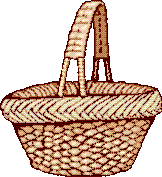

Suffolk Intergroup Association
of A.A. Bulletin July 2004
113-8 Bay Avenue Patchogue, NY 11772
(631) 654-1150 FAX (631) 654-1110
Mail: P.O. Box 659 Patchogue, NY 11772 email: WWW.SUFFOLKNY-AA.ORG
BOOK OF THE MONTH FOR JULY
"AA COMES OF AGE"
Receive $1.00 off regular price by coming down to the SIA office in Patchogue!
QUOTE OF THE MONTH FOR JULY
"WE'VE GOT TWO LIVES, THE ONE WE'RE GIVEN AND THE ONE WE MAKE"
KOBE YAMADA

From the Preamble
:
"There are no dues or fees for A.A. membership; we are fully self-supporting
through our own contribtuions."
This is the tradition that reminds us that we do pass the basket and why we do it. The tradition reads: "Every A. A. group ought to be fully self-supporting, declining outside contributions." Bill Wilson wrote in his explanation of how this tradition was born, that "probably no A. A. Tradition had more labor pains that this one."
In the
12&12
, Wilson explained that the Fellowship stayed poor because it had to. The idea was that sober people must now pay their own way. Surprisingly, early on, recovering alcoholics had a "terrific aversion" to dropping money into the basket (aka the hat), even Bill himself. However,
A. A. had to function. So Tradition Seven states that bare running expenses plus a prudent reserve would be the Foundation's financial policy. The thinking was that if A. A. accepted outside contributions, 1) it took away the responsibility of the individual member to support his/her group; 2) that whoever "pays the piper, calls the tune."
As such, two of the six questions from the A. A.
Grapevine
Traditions Checklist for Tradition Seven are:
1. Do I do all I can to help my group and A. A. remain self-supporting? Could I put a little more money in the basket on behalf of the new guy who can't afford it yet?
2. Is the group treasurer's report unimportant A. A. business? How does the treasurer feel about it?
Back
Next